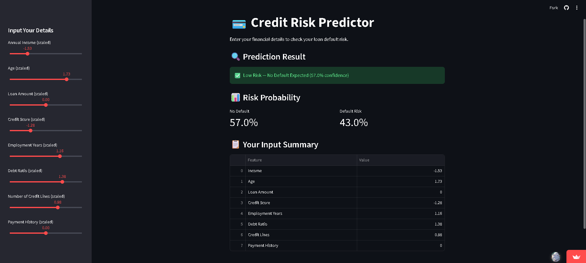
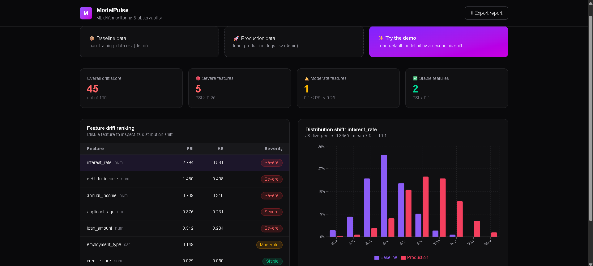
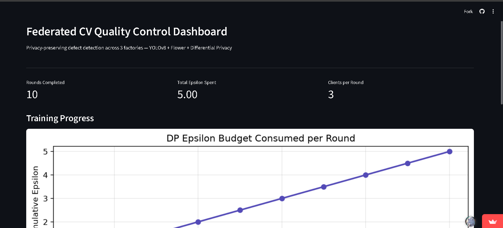
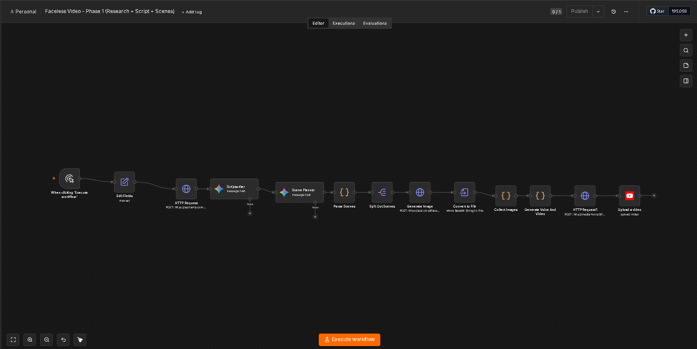
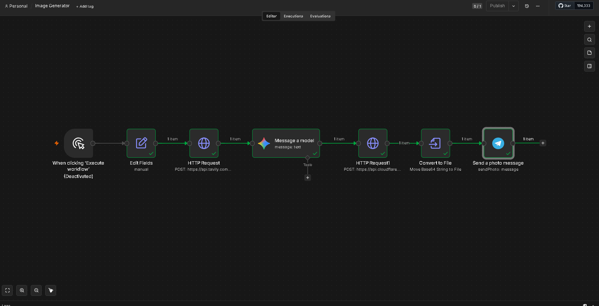
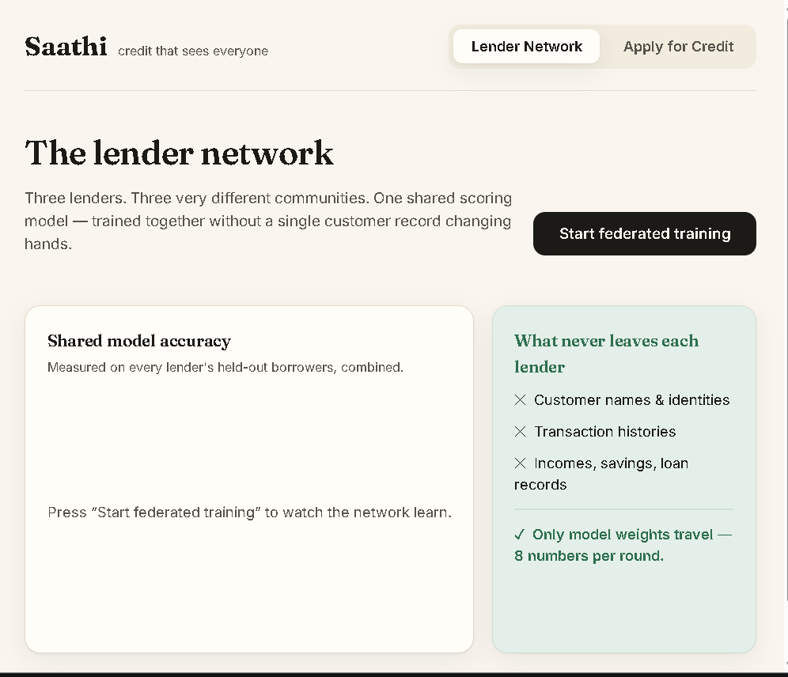

Projects




Federated Learning Framework
Federated learning (FedAvg) from scratch in PyTorch — 10 simulated clients, CIFAR-10, with a real accuracy/privacy tradeoff measured via Differential Privacy.

N8N Image Generation Workflow
An automated, multi-step AI workflow built in n8n that researches a topic, writes a social media post, generates a matching image, and delivers the finished result — all from a single trigger, with a human-in-the-loop review step before anything is published.


Saathi Score
A privacy-first alternative credit scoring platform for India's unbanked — street vendors, gig workers, and small farmers with no CIBIL history. Scores people on the financial life they actually live, letting multiple lenders train one shared model via federated learning without any raw customer data leaving their systems.
Semantic Guard
A benchmark for detecting LLM hallucinations — combines NLI-based semantic signals with an LLM-as-judge (from a different model family than the one being evaluated, to avoid self-preference bias) to separate truthful answers from hallucinated ones.
Adaptive FL Paper
A novel federated learning framework that integrates per-client ADWIN-based concept drift detection with dynamic client weighting during aggregation.
FedMed Adaptive DP
FedMed is a federated learning framework for medical tabular data that introduces sensitivity-aware adaptive differential privacy.
Stock Market Pipeline
A production-grade real-time streaming pipeline that fetches live stock prices, streams them through Apache Kafka, stores them in PostgreSQL, and visualizes them on a Streamlit dashboard — fully containerized with Docker.
News ETL Pipeline
A production-grade ETL pipeline that fetches live news, performs sentiment analysis, stores data in MySQL, and visualizes it on a Streamlit dashboard — fully containerized with Docker and automated with GitHub Actions.
QAOA vs VQE Max-Cut Benchmark
Benchmarking QAOA against VQE on the Max-Cut problem using Qiskit and PennyLane.
Loan Default Predictor
A machine learning project predicting whether a loan applicant will default, using real-world style financial features and comparing Logistic Regression against Random Forest models.